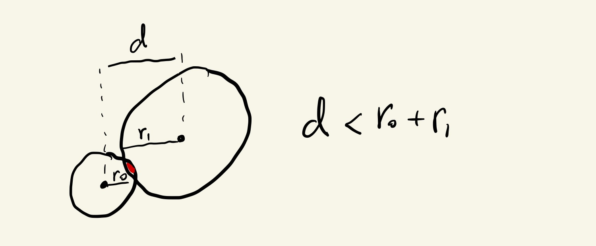

Before we start looking at arrays, the main topic of this page, let’s review a couple of concepts that will make it easier for us to visualize what they are and how to use them.
We saw the p5.js variables mouseX and mouseY when we looked at variables, conditionals and functions.
These variables always hold the x and y position of our mouse during the execution of our sketch, so if we use them inside our draw() function to draw an ellipse, it will look like the ellipse is following our mouse.
Great.
When we looked at conditionals and functions we also saw code that could detect overlap between our mouse and different shapes.
Like this code that changes the color of rectangles when the mouse hovers over them:
Or this code that changes the shapes that it draws when it detects collision between our mouse ellipse and an obstacle:
Also great.
But, right now, we are not so interested in the logic for detecting collision or overlap. Instead, we want to look at how we can rewrite the code that defines the obstacles in those sketches in a way that will make it easier to add new obstacles and change the ones that are already there.
Let’s take a look at a simplified version of one of those sketches, that only draws ellipses. Here we want \(5\) obstacle ellipses, and since later we’ll want to use their positions to detect collision, we’ll use \(5\) variables to hold their x positions and another \(5\) variables for their y positions.
This is all fine and works well… for \(5\) ellipses. What if this is the initial prototype of a game we are making and eventually we will want to have \(100\) obstacles ?
Writing x0, x1, x2, …, x99 to define all of the values just isn’t very practical. An then, calling rect(x0, y0, d), rect(x1, y1, d), rect(x2, y2, d), …, rect(x99, y99, d) inside draw() is just as much work.
Luckily, JavaScript, like most programming languages, has a builtin data-structure called Array that can help us organize data like this.
Just like we can declare variables to hold numbers:
let x = 10;
let y = 20;
let z = 90;
We can declare variables to hold arrays:
let a = [];
let b = [];
But, unlike a regular variable that holds just one value, arrays hold sequences of values.
The syntax with the [ and ] square brackets above is kind of funny looking, but it’s telling the computer that we want the variables a and b to be arrays, and we want these arrays to start empty.
If instead we wanted to declare arrays already with values inside, this is the syntax:
let ints = [0, 1, 2, 3, 4];
let evens = [0, 2, 4, 6, 8];
let odds = [1, 3, 5, 7, 9];
The ints variable holds an array, and that array has \(5\) elements, the first \(5\) non-negative integers: \(0\), \(1\), \(2\), \(3\) and \(4\).
The evens and odds arrays also hold \(5\) elements each, the first \(5\) non-negative even and odd whole numbers, respectively.
Once we have declared and initialized an array, we can access its members using square brackets [ and ]:
evens[0]; // first value of the evens array: 0
evens[1]; // second value of the evens array: 2
evens[2]; // third value of the evens array: 4
// ... etc
Let’s see how we can use this in our sketch with the obstacles.
Instead of x0, x1, y0, y1, etc, we’ll declare arrays to hold the x and y positions of our obstacles, and use the bracket notation to access individual elements when it’s time to draw them.
At first this doesn’t seem like an advantage at all, because we just changed x0, x1, etc for x[0], x[1], etc, which actually requires even more typing.
The full advantage of using arrays comes from the fact that we can iterate through them using for() loops and avoid writing repetitive code like the one above.
For example, if we want to print all the values in an array called x, we can use code like this:
for (let i = 0; i < x.length; i += 1) {
print(x[i]);
}
This is new and can look intimidating at first, so let’s go over it in detail.
First, we create a for() loop that counts from \(0\) all the way to x.length in increments of \(1\). This is just like any for() loop we’ve seen here or here. The one difference is that the loop’s end condition (the i < x.length expression) doesn’t use a fixed value, nor one of the variables that have to do with the canvas dimensions, like width and height.
Instead, our loop is using a variable that belongs to our array x and tells us how many elements are in the array. So, if our array has \(5\) elements in it, the loop will execute \(5\) times. If our array has \(50\) elements in it, it will execute \(50\) times. An advantage of using the x.length variable instead of a fixed value for the end-condition expression, like i < 5, is that this way we can add or remove elements to our array without having to change this code.
In the specific example above, the only thing the loop body does is print(x[i]), which prints the value of the element in position i of the array. Since i is our loop variable that counts from \(0\) to \(5\), the result of the loop is the same as:
print(x[0]);
print(x[1]);
print(x[2]);
print(x[3]);
print(x[4]);
Except we didn’t have to write all of those lines and risk a spelling mistake.
Let’s use this in our sketch with the obstacles to see how we can avoid writing repetitive code.
After we’ve declared our arrays with x and y positions, we’ll iterate through them in order to draw the ellipses.
Same result. Way less code.
And, more importantly, more elegant and maintainable code.
Now that we are drawing our elements by iterating over our array using a for() loop, we can easily add more obstacles to our sketch.
All we have to do is add elements to the x and y arrays, but the rest of the code in draw() stays exactly the same.
We can easily put back the overlap detection function and change the logic for selecting the colors of the ellipses to work with our arrays.
We’ll use a simpler version of the ellipseOverlap() function:
function ellipseOverlap(x0, y0, diam0, x1, y1, diam1) {
let d = sqrt((x1 - x0) ** 2 + (y1 - y0) ** 2);
return d < diam0 / 2 + diam1 / 2;
}
This function implements this logic from the functions tutorial:

It uses euclidean distances to determine if two ellipses are closer than the sum of their radii, and returns true if they are overlapping and false otherwise. It doesn’t draw the concentric circles like the original one because we’ll see how to do that in a more elegant manner when we look at classes.
And, if we get bored of writing the x and y coordinates by hand, we can use what we learned about random() to create some random positions for our obstacles inside setup().
We can start with empty x and y arrays:
let x = [];
let y = [];
Then, we can use a for() loop to count to \(5\), and random() to get \(5\) random coordinate pairs. Once we have coordinates, we can add them to the end of the arrays using the special array function push().
For example, this is how we add the numbers \(10\), \(12\) and \(14\) to the end of an array called evens:
evens.push(10);
evens.push(12);
evens.push(14);
And this is how we add a random coordinate between \(0\) and width to the end of our x array:
let mx = random(0, width);
x.push(mx);
We can use something like this for the x and y coordinates in our sketch. And besides changing how the ellipse coordinates get initialized, we didn’t have to change anything in our sketch. The draw() function is exactly the same as before.
We’ll see how to make it so the obstacles don’t overlap when we talk about classes, but for now, arrays, FTW!